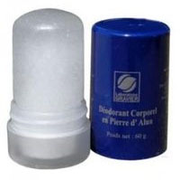

Déodorant en pierre d'Alun (Laboratoire Gravier) - 60gr
Le déodorant corporel en Pierre d'Alun de potassium du Laboratoire GRAVIER s'utilise comme un déodorant classique.
Grâce à ses propriétés astringentes, le potassium d'alun régule le développement bactérien à l'origine des odeurs désagréables de la transpiration.
Utilisé sous forme de sticker, il suffit de l'humidifier avant de le passer sur la partie du corps souhaitée (aisselles, pieds,..). Un film invisible de sels minéraux subsiste alors sur la peau, resserrant les pores, empêchant le développement bactérien, sans bloquer le processus naturel d'élimination qu'est la transpiration. Il peut être aussi utilisé pour calmer le feu du rasoir grâce à ses propriétés hémostatiques.
Format
Il est disponible en sticker de 60 g (idéal pour les trousses de toilette) et de 120 g (existe aussi en spray).
Composition
Le déodorant en pierre d'alun du Laboratoire GRAVIER est composé d'alun de potassium à 100%.
- Conformément à la réglementation cosmétique en vigueur (art R. 5131-2, Ord. N° 2000-548 du 15 juin 2000) le déodorant corporel en pierre d'alun du Laboratoire GRAVIER a été testé cliniquement : il est non irritant, non allergisant.
- Origine minérale 100% pure Alun de Potassium, Garanti sans chlorhydrate d'aluminium et non reconstitué.
- Sans odeur, sans alcool, ni colorant.
- Sans parabens.
- Non testé sur les animaux.
Conseil d'utilisation
- En déodorant : après la douche humidifier le sticker, le passer une fois sous chaque aisselle.
- En après rasage : passer le sticker sur les petites coupures pour stopper le saignem
Précautions d'emploi
- Garder hors de portée des enfants.
- Eviter tout contact avec les yeux et les muqueuses.
- Ne pas ingérer.
- Ne pas faire tomber (la pierre d'alun peut se casser).